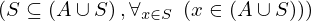
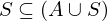
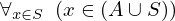
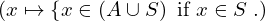
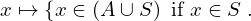
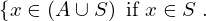
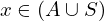
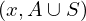
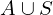
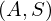

Expression of type Equals¶
from the theory of proveit.logic.sets¶
In [1]:
import proveit
# Automation is not needed when building an expression:
proveit.defaults.automation = False # This will speed things up.
proveit.defaults.inline_pngs = False # Makes files smaller.
%load_expr # Load the stored expression as 'stored_expr'
# import Expression classes needed to build the expression
from proveit import A, S, x
from proveit.logic import Equals, Forall, InSet, SubsetEq, Union
In [2]:
# build up the expression from sub-expressions
sub_expr1 = Union(A, S)
expr = Equals(SubsetEq(S, sub_expr1), Forall(instance_param_or_params = [x], instance_expr = InSet(x, sub_expr1), domain = S))
In [3]:
# check that the built expression is the same as the stored expression
assert expr == stored_expr
assert expr._style_id == stored_expr._style_id
print("Passed sanity check: expr matches stored_expr")
In [4]:
# Show the LaTeX representation of the expression for convenience if you need it.
print(stored_expr.latex())
In [5]:
stored_expr.style_options()
In [6]:
# display the expression information
stored_expr.expr_info()
| core type | sub-expressions | expression | |
|---|---|---|---|
| 0 | Operation | operator: 1 operands: 2 | |
| 1 | Literal |  | |
| 2 | ExprTuple | 3, 4 |  |
| 3 | Operation | operator: 5 operands: 6 |  |
| 4 | Operation | operator: 7 operand: 9 |  |
| 5 | Literal |  | |
| 6 | ExprTuple | 22, 17 |  |
| 7 | Literal |  | |
| 8 | ExprTuple | 9 |  |
| 9 | Lambda | parameter: 18 body: 11 |  |
| 10 | ExprTuple | 18 |  |
| 11 | Conditional | value: 12 condition: 13 |  |
| 12 | Operation | operator: 15 operands: 14 |  |
| 13 | Operation | operator: 15 operands: 16 |  |
| 14 | ExprTuple | 18, 17 |  |
| 15 | Literal |  | |
| 16 | ExprTuple | 18, 22 |  |
| 17 | Operation | operator: 19 operands: 20 |  |
| 18 | Variable |  | |
| 19 | Literal |  | |
| 20 | ExprTuple | 21, 22 |  |
| 21 | Variable |  | |
| 22 | Variable |  |